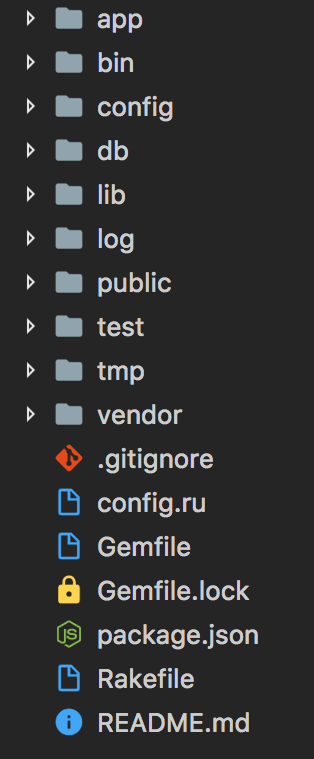
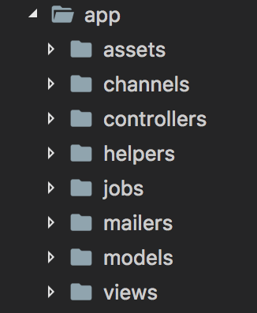

Ruby on Rails
Instructor: Sean C Davis
Agenda
- Session 1: Introduction
- Session 2: Something Else
- Session 3: Introduction
- Session 4: Introduction
Session 1: Introduction
A Good Developer
There's No Secret
Push Through Failure
Be Elated By Success
Work Hard
Google!
Stay Organized
Be Curious
Ruby
Ruby Is
- Productive
- Fun
- Not Surprising
Examples:
# variables
my_var = 1 # => 1
# operations
my_var + 1 # => 2
# arrays
my_array = [1, 2, 'a', 'b', my_var] # => [1, 2, 'a', 'b', 1]
# methods
def add(a, b)
a + b
end
add(2, 3) # => 5
Object-Oriented Programming:
- Everything is an object
- Objects have attributes
- Objects have methods
class Book
attr_accessor :title
def reverse_title
title.reverse
end
end
book = Book.new # => #<Book:0x007fbcf48c8120>
book.title = 'American Gods'
book.title # => 'American Gods'
book.title = 'The Martian'
book.title # => 'The Martian'
book.reverse_title # => 'naitraM ehT'
Ruby on Rails
Rails is:
- Server-Side Web Application Framework
- Productive
- Fun!
Rails Principles:
- Don't Repeat Yourself (DRY)
- Convention Over Configuration (The Rails Way)
Rails' History
- Released in 2005
- Extracted from Basecamp
- Used by 1.2M: Basecamp, AirBNB, GitHub, Dribble
What About HTML/CSS?
- HTML and CSS still play a big role
- Dynamic data (database)
- Scalability and Flexibility
Let's Get To Work
Demo
We're going to build a classroom grading system!
TODO: Slides on Cloud9 setup
TODO: Slides on Cloud9 setup
A Simple HTML Site

A Rails App
Uh, WTF?
Good news!
We will spend most of our time within the app folder
(directory).
Still, Let's Peek
app:Holds the files you'll create to build the appbin:A place Rails keeps its command-line scriptsconfig:A handful of configuration filesdb:Files related to the databaselib:General class files and rake taskslog:A place to hold log filespublic:The technical root of your projecttest:Where all the test files gotmp:Houses temporary files that are regularly deletedvendor:Third-party assets
The App Directory
Model-View-Controller (MVC)

Model-View-Controller (MVC)
- Model: The scientist
- Controller: The conductor
- View: The mailman
The App Directory
assets:Images, videos, fonts, stylesheets, javascripts, etc.channels:For websockets (we won't use)controllers:Files that control app logichelpers:Shared code for view filesjobs:Background processes (we won't use)mailers:Controllers for emailsmodels:Data models (controls for the database)views:HTML view files
Let's Write Some Code
Models
Data objects used by the application.
What will our app require?
- Student
- Teacher
- Classroom
- Assignment
- Score
Attributes
An attribute is a piece of information about a model.
Attributes are database columns.
What attributes should our students have?
- Name (String)
- Age (Integer)
Rails Generators
Rails comes with a set of generators that remove the need of performing some boring and repeatable tasks.
We can see the tasks available to us by running:
$ rails generate
Rails:
assets
channel
controller
generator
helper
integration_test
jbuilder
job
mailer
migration
model
resource
scaffold
scaffold_controller
system_test
task
Student Scaffold
We're going to use a Rails scaffold to add all the files we need for students (along with some extras we won't use):
$ rails generate scaffold student name:string age:integer
Notice the output:
invoke active_record
create db/migrate/20170601105024_create_students.rb
create app/models/student.rb
invoke test_unit
create test/models/student_test.rb
create test/fixtures/students.yml
invoke resource_route
route resources :students
invoke scaffold_controller
create app/controllers/students_controller.rb
invoke erb
create app/views/students
create app/views/students/index.html.erb
create app/views/students/edit.html.erb
create app/views/students/show.html.erb
create app/views/students/new.html.erb
create app/views/students/_form.html.erb
invoke test_unit
create test/controllers/students_controller_test.rb
invoke helper
create app/helpers/students_helper.rb
invoke test_unit
invoke jbuilder
create app/views/students/index.json.jbuilder
create app/views/students/show.json.jbuilder
create app/views/students/_student.json.jbuilder
invoke test_unit
create test/system/students_test.rb
invoke assets
invoke coffee
create app/assets/javascripts/students.coffee
invoke scss
create app/assets/stylesheets/students.scss
invoke scss
create app/assets/stylesheets/scaffolds.scss
Student Scaffold
Let's step through the files we're going to use and see what they each do.
Data Migration
Data migrations run a task within the database (so you don't have to write ugly SQL code).
This:
create_table :students do |t|
t.string :name
t.integer :age
t.timestamps
end
Is the equivalent of this, in SQL code:
CREATE TABLE "students" ("id" INTEGER PRIMARY KEY AUTOINCREMENT NOT NULL, "name" varchar, "age" integer, "created_at" datetime NOT NULL, "updated_at" datetime NOT NULL);
Data Migration
Now let's make the database run the code.
Create the database:
$ rails db:create
Run the migration:
$ rails db:migrate
Data Migration
A new file was created for you: db/schema.rb.
It stores a snapshot of your database's structure.
It also looks like migration (ruby) code:
ActiveRecord::Schema.define(version: 20170601102352) do
create_table "students", force: :cascade do |t|
t.string "name"
t.integer "age"
t.datetime "created_at", null: false
t.datetime "updated_at", null: false
end
end
Student Model
The generator also gave you a student model in
app/models/student.rb:
class Student < ApplicationRecord
end
This means your app now has a Student class which
inherits from an ApplicationRecord class.
Rails Server
Before we go any further, let's start the rails server and see what happens.
$ rails server
Rails Server
At this point, all we have is a static page.
Where the heck did it come from?
This is the default Rails home page because we aren't telling Rails what to do with our home page.
Routes
Routes in Rails are URL paths/fragments that tell Rails which
controller is responsible based on the current URL.
(Don't worry, this will make more sense soon!)
Check out config/routes.rb:
Rails.application.routes.draw do
resources :students
end
What the heck does this mean?
Routes
We can run another task to have Rails show us what our routes really are.
$ rails routes
And the output:
Prefix Verb URI Pattern Controller#Action
students GET /students(.:format) students#index
POST /students(.:format) students#create
new_student GET /students/new(.:format) students#new
edit_student GET /students/:id/edit(.:format) students#edit
student GET /students/:id(.:format) students#show
PATCH /students/:id(.:format) students#update
PUT /students/:id(.:format) students#update
DELETE /students/:id(.:format) students#destroy
There's a lot going on here, and we will cover it all, but for now
notice that we have no home (root) path, which would be
/.
Routes
So, add the root path in config/routes.rb.
Rails.application.routes.draw do
resources :students
root to: 'students#index'
end
This means the root of our application points to the
index action of the students controller.
(It's also important to know that the root path goes on the
bottom of the routes file.)
Routes
Let's look at our routes again
$ rails routes
Notice the new line at the bottom:
root GET / students#index
Awesome! Now reload the home page and see what we've got.
Rails Server
Awesome! Now reload the home page and see what we've got.
It Works!
Rails Server
OK, cool, but why does it work?
Page Loading Process
-
When you navigate to a page in the app, Rails first looks at
your
config/routes.rbfile. -
Since you went to the home page, Rails matched that route and
sent it to the
indexaction of thestudentscontroller. -
The
indexmethod did some stuff, and then Rails knew to render the student'sindexview.
Cool, so let's dig into #2 and #3.
Student Controller
The file in app/controllers/students_controller.rb
is your students controller.
It's a long file, but look at the index method
specifically. (Methods are called actions when they lead to a route
being rendered.)
def index
@students = Student.all
end
In ruby, @ means the variable is an instance variable.
For us that means it is also available to the view.
Student is our student model (remember it's a class),
and .all means we're callng the all
method on the student class.
all is an ActiveRecord query that returns all students
found in the database.
Student Index View
The file in app/views/students/index.html.erb
is the index view for students.
It's mostly HTML, isn't it?
<table>
<thead>
<tr>
<th>Name</th>
<th>Age</th>
<th colspan="3"></th>
</tr>
</thead>
<tbody>
<% @students.each do |student| %>
<tr>
<td><%= student.name %></td>
<td><%= student.age %></td>
<td><%= link_to 'Show', student %></td>
<td><%= link_to 'Edit', edit_student_path(student) %></td>
<td><%= link_to 'Destroy', student, method: :delete, data: { confirm: 'Are you sure?' } %></td>
</tr>
<% end %>
</tbody>
</table>
Student Index View
The <% %> symbols are called embedded ruby.
When this view is rendered, the embedded ruby code is transformed to HTML code, and then the entire HTML file is sent to the browser.
That's why the view may look like this when it's presented:
Name
Age
Nick Cage
53
Show
Edit
Destroy
Emma Watson
27
Show
Edit
Destroy
Student Index View
Some additional notes on ruby embedded in this file:
-
@studentsis the variable the view received from the controller calling@student = Student.all -
eachis a method available on arrays in ruby (@studentsisn't really an array, but let's ignore that for now) that enables us to loop through each student. -
So
@students.each do |student|loops through each student, setting each to a temporarystudentvariable. -
We can call
nameandageonstudentbecause we added those as attributes. -
link_tois a rails helper for resolving anchor tags. -
Rails also has route helpers. It knows that
edit_student_path(student)should be the edit path for that student. (Runrails routesagain.) - Adding an equals sign at the beginning of an embedded ruby section will output the result in text to the page.
Student Index View
Try some experimentation and see what happens. After each, refresh the browser on the home page.
- Change the page heading
- Change a column heading
-
Change
'Destroy'to'Delete' -
Change
person.nametoperson.title -
Add
=to the beginning of the students loop.
Marvelous Unordered List
- No order here
- Or here
- Or here
- Or here
Fantastic Ordered List
- One is smaller than...
- Two is smaller than...
- Three!
Speaker View
There's a speaker view. It includes a timer, preview of the upcoming slide as well as your speaker notes.
Press the S key to try it out.
P.S. This won't work when running the slides locally unless you run reveal.js from a local web server (learn how).
But wait! We teach code
For HTML -- Surround your code pre, then code class "xml".
<ul class="demo">
<li>No order here</li>
<li>Or here</li>
<li>Or here</li>
<li>Or here</li>
</ul>
But wait! We teach code
We can also make code editable
<ul class="demo">
<li>No order here</li>
<li>Or here</li>
<li>Or here</li>
<li>Or here</li>
</ul>
But wait! We teach code
CSS
body{
background-color: #ffffff;
}
But wait! We teach code
Javascript
function helloWorld(){
var name = 'GDI';
alert("Hi, " + name)
}
But wait! We teach code
PHP
function helloWorld(){
$name = 'GDI';
echo "Hi, " . $name;
}
But wait! We teach code
Ruby
def hello_world
@name = 'GDI'
puts "Hi, #{@name}"
end
But wait! We teach code
Python
def hello_world():
name = "GDI"
print 'Hi, ' + name
return
But wait! We teach code
Java
public void helloWorld(){
String name = "GDI";
System.out.println("Hi," + name)
}
Fragmented Views
Hit the next arrow...
... to step through ...
any type- of view
- fragments
Fragment Styles
There's a few styles of fragments, like:
grow
shrink
roll-in
fade-out
highlight-red
highlight-green
highlight-blue
Vertical Slides
Slides can be nested inside of other slides, try pressing down.
Basement Level 1
Press down or up to navigate.
Basement Level 2
Basement Level 3
That's it, time to go back up.
Point of View
Press ESC to enter the slide overview. Hold down alt and click on any element to zoom in on it using zoom.js. Alt + click anywhere to zoom back out.
rvl.io
You know, we are nerds after all and will probably get a kick out of all of this HTML. BUT, if you really don't like writing slides in HTML you can use the online editor rvl.io.
Transition Styles
You can select from different transitions, like:
Cube -
Page -
Concave -
Zoom -
Linear -
None -
Default
Themes
Reveal.js comes with a few themes built in:
GDI Cool -
GDI Light -
GDI Sunny -
Default
* Theme demos are loaded after the presentation which leads to flicker. In production you should load your theme in the <head> using a <link>.
Custom Events
Additionally custom events can be triggered on a per slide basis by binding to the data-state name.
Reveal.addEventListener( 'customevent', function() {
console.log( '"customevent" has fired' );
} );
Clever Quotes
These guys come in two forms, inline:
The nice thing about standards is that there are so many to choose from
and block:
For years there has been a theory that millions of monkeys typing at random on millions of typewriters would reproduce the entire works of Shakespeare. The Internet has proven this theory to be untrue.
Intergalactic Interconnections
You can link between slides internally, like this.
Take a Moment
Press b or period on your keyboard to enter the 'paused' mode. This mode is helpful when you want to take distracting slides off the screen during a presentation.